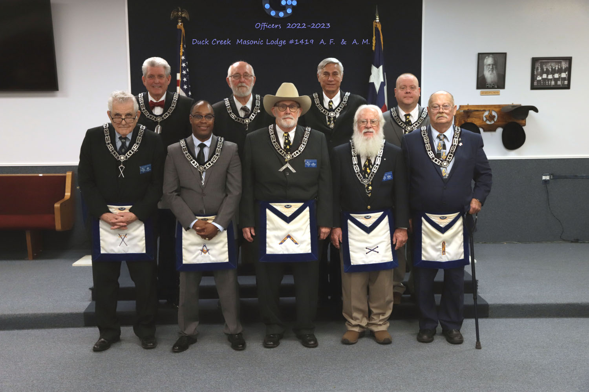

Duck Creek Masonic Lodge March Stated Meeting will be on Monday, March 13 at 7:00pm.
At the February Stated Meeting, we talked about the Scholarship applications going out to the schools this month. Our primary topic was to discuss whether to include Accredited Trade Schools in the allowed schools. This was a very well received suggestion, so all of our invitations will go out including "show evidence of enrollment in an accredited college, university, or trade school"
We also discussed an opportunity to partner with St. James Episcopal Church to help with their mission to feed the homeless at Austin Street Shelter. There would be a need to provide 4-5 volunteers, once every 3 months. There will be more information on this sent out via email in the next couple of months.
Duck Creek Masonic Lodge is located at 600 N. 5th Street in Garland, TX
Stated Meetings are the second Monday of each Month at 7:00pmThe Duck Creek Education Foundation is a 501c(3) and is accepting donations for school supplies and scholarship awards. Scholarships were awarded in May this year, and we continue to collect for the School Supply Drive to support the financially distressed elementary school children within Garland Independent School District. Contact the Lodge at 469-931-2163 for additional information. Click on This Link to donate to the Duck Creek Education Foundation using PayPal.
You can also support the Duck Creek Education Foundation when you purchase from Amazon.com by going to smile.amazon.com When you go to that site (it is exactly what your regular Amazon landing page is) you will be able to designate "Duck Creek Education Foundation" as your Supporting non-profit. Any eligible purchases made thru the "Smile" link will earn a 0.5% donation.

2022-2023 Officers
Front-Left to Right: Master of Ceremonies Mike Ripps; Junior Deacon Timothy Britt; Worshipful Master Carl 'Bo' Caperton; Marshall Steve C. Moore; Junior Warden Don Wiley;
Back Row-Left to Right: Chaplain Joseph W. French; Tiler Michael D. Wellman; Senior Deacon Paul Blumhardt; Senior Warden Chris Downs